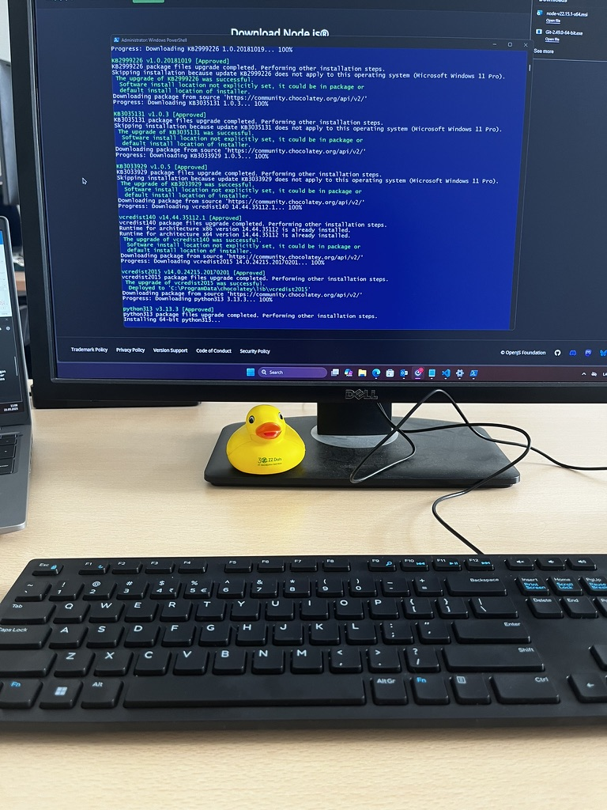
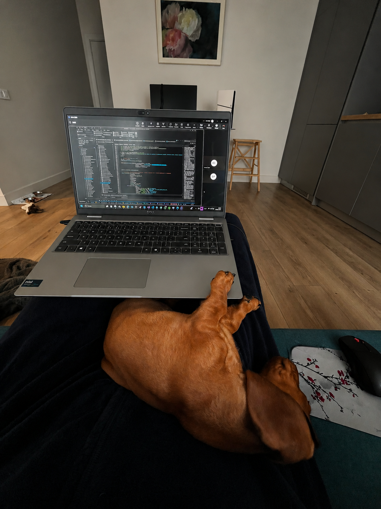

Par darbu IT jomā
Strādāt IT uzņēmumā paralēli studijām ir izaicinošs, bet ļoti noderīgs pieredzes avots. Programmēšanas zināšanas, ko apgūst universitātē, tiek lietotas praksē jau nākamajā dienā. Darba dienas tiek sadalītas starp biroju un attālinātu darbu, kas sniedz elastību studiju grafikam.
Zemāk atradīsi ieskatu tipiskā darba dienā — no rīta rutīnas līdz vakara projektu pabeigšanai.
🖥️ Programmēšanas ikdiena
Ko nozīmē strādāt kā programmētājam studiju laikā
Darba rīks — kods
Lielākā daļa darba laika tiek pavadīta rakstot kodu, pārskatot citu komandas biedru kodu (code review) un risinot tehniskus izaicinājumus. Izmantotās tehnoloģijas atkarīgas no projekta — parasti tas ir JavaScript ar React vai TypeScript frontenda pusē, vai Python un Vue.js backend risinājumos.
Katru dienu tiek izmantots Git versiju kontroles sistēma. Katrs uzdevums sākas ar jauna branch izveidi, turpinās ar commit veidošanu un beidzas ar pull request iesniegšanu. Šī prakse, ko māca arī universitātē, ir neatņemama profesionāla programmētāja ikdienas daļa.
Papildus kodēšanai liela daļa laika aiziet dokumentācijas rakstīšanā, sanāksmēs un projektu plānošanā. Komunikācija komandā notiek caur Teams un regulārām video zvanu sanāksmēm.
async function fetchUserData(userId: string): Promise<User> {
const cached = await redis.get(`user:${userId}`);
if (cached) return JSON.parse(cached);
const user = await db.users.findUnique({
where: { id: userId },
include: {
profile: true,
roles: { select: { name: true } },
},
});
if (!user) throw new NotFoundError("User not found");
await redis.setex(
`user:${userId}`,
300,
JSON.stringify(user)
);
return user;
}Diena birojā
Biroja dienas parasti sākas ap 10:00. Birojs ir atvērta tipa telpa ar darbstacijām, kur katram darbiniekam ir savs monitors un darba vieta. Kafija un neformālas sarunas ar kolēģiem ir neatņemama biroja kultūras daļa.
Dienas sākumā notiek īsa "standup" sanāksme (15 minūtes), kurā katrs dalās ar to, ko strādāja vakar, ko plāno šodien un vai ir kādi šķēršļi. Šī prakse nāk no Agile/Scrum metodikas un palīdz komandai koordinēties.
Birojā ir vieglāk uzdot jautājumus kolēģiem tiešā veidā, pārrunāt sarežģītas tehniskas problēmas pie tāfeles un justies kā komandas daļai. Pusdienas bieži tiek ēstas kopā ar kolēģiem — tā ir laba iespēja iepazīties ar cilvēkiem ārpus darba konteksta.

Attālinātais darbs no mājām
Attālinātais darbs ļauj elastīgāk plānot dienu ap universitātes grafiku. Mājas darba vide prasa disciplīnu — ir viegli iztrūkties un sākt darīt citas lietas, taču pareiza rutīna palīdz uzturēt produktivitāti.
Mājās darba vieta ir tikpat svarīga kā birojā. Labs krēsls, ārējais monitors un austiņas rada "darba modu". Svarīgi ir noteikt skaidras sākuma un beigu laiku darbam, lai nemērķīgi nepārslagotu visas dienas garumā.
Attālinātā darba laikā komunikācija ar komandu notiek galvenokārt caur Teams un e-pastu. Video zvani aizstāj klātienes sanāksmes. Šāds darba formāts ir kļuvis par normu IT nozarē, un daudziem tas ir labākais veids kā sabalansēt darbu ar studijām.
